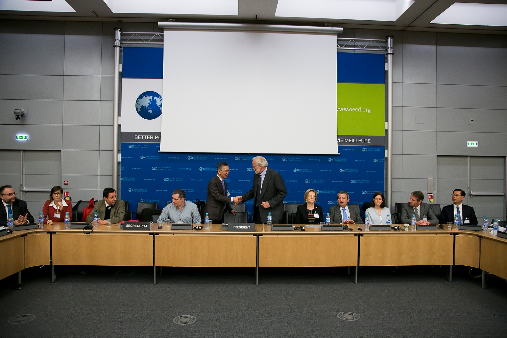

Events
SciColl and our partners host and participate in a wide variety of events, conferences and networking activities.
You can keep track of us on Twitter or email us directly to discuss one of our upcoming events!
- No Upcoming Events
- Beltsville, September 2016 Stressors and Drivers of Food Security: Evidence from Scientific Collections
- Berlin, June 2016 31st Annual SPNHC Meeting & 2nd Annual GGBN Meeting
- Washington, DC, February 2016 Designing GRSciColl Version 2.0
- Gainesville, May 2015: SciColl and GRSciColl, 30th Annual SPNHC Meeting
- Washington DC, April 2015: SciColl/CBOL Global Registry of Biodiversity Repositories (GRBio) Community Workshop
- Washington DC, October 2014: SciColl/US USDHHS Emerging Zoonotic and Human Diseases Workshop
- Cardiff, 25 June 2014: Environmental Change and Natural History Collections Session, 29th Annual SPNHC Meeting
- Suva, July 2013: Connecting biodiversity collections in the Pacific, 12th Pacific Science Association Inter-Congress
- Paris, April 2013: SciColl Interim Executive Board Meeting and Official Launch Ceremony
- Kuala Lumpur, June 2011: SciColl Workshop on Scientific Collections in the Pacific, 22nd Pacific Science Congress
- Melbourne, February 2011: Second International SciColl Conference
- Brussels, February 2010: First International SciColl Conference
-
Beltsville, September 2016: Stressors and Drivers of Food Security: Evidence from Scientific Collections
USDA National Agriculture Library, Beltsville, MD, September 19-21 2016
Stressors and Drivers of Food Security: Evidence from Scientific Collections
(Read more about this initiative at the Food Security page...)Day 3: Wednesday, 21 September 2016
- 9:00 Session 7 Participants separated into break-out groups to discuss:
-
New strategies for increasing the use and impact of collections and associated databases for food security research
- Grace Costantino
- Rod Page
- Kris Gremillion
- Shannon Dominick
- Savi Natarajan
- Jill Demers
- Muni Muniappan
- Akwasi Asamoah
-
Case studies that exemplify cross-cutting and forward-thinking uses of collections and
associated databases for food security research
- Rosalind James
- David Inouye
- John Dickie
- Daniel Debouck
- Kristina Hill
- Maxine Levin
- George Ziobro
- Zafar Handoo
-
Major recommendations for the research and collections communities, funding agencies,
and/or networks (such as SciColl)
- Cyndy Parr
- Ari Novy
- Kevin Hackett
- Ann Marie Thro
- Marcia Maues
- Patricia Mergen
- Martin Kalfatovic
- Edna Makule
- 10:30 Coffee Break
- 11:00 Discussion & Next Steps: Cyndy Parr, Moderator
- Break-out group summaries: Reports from each break-out group will be compiled into one set of new strategies and case study examples.
- Recommendations: What new capabilities, best practices and collaborations should be set as new goals for collections and researchers?
- Priorities: Where should resources and efforts be focused in the near-term, mid-term, and long-term?
- Action items: What should we do in the near-term, mid-term, and long-term to pursue these goals?
- 12:30 Adjourn
- 13:00 Collections Tours
- US National Aphid Collection & US National Mites Collection
- NAL Library and Special Collections
-
Berlin, June 2016: 31st Annual SPNHC Meeting & 2nd Annual GGBN Meeting
SPNHC, Berlin 2016
31st Annual SPNHC Meeting & 2nd Annual GGBN Meeting
The Secretariat Office represented SciColl and GRSciColl at the 31st Annual Society for the Preservation of Natural History Collections (SPNHC) and the 2nd Annual Global Genome Biodiversity Network meetings, co-located in Berlin, Germany.
Type Speaker Title Keynote- GGBN David Schindel Thematic, Demand-driven Sampling: Economics of Three Strategies Presentation - GGBN Eileen Graham A Global Registry for Scientific Collections: Striking a balance between disciplinary detail and interdisciplinary discoverability Presentation - SPNHC David Schindel Scientific Collections, Food Security and Emerging Infectious Diseases Demonstration - DemoCamp Eileen Graham Global Registry of Scientific Collections: Function and Application (No presentation recorded) - Washington DC, February 2016: Designing GRSciColl Version 2.0
-
Gainesville, May 2015: SciColl and GRSciColl, 30th Annual SPNHC Meeting
Gainesville, FL 2015
30th Annual SPNHC Meeting
The Secretariat Office represented SciColl and the global registries (GRSciColl & GRBio) at the 30th Annual Society for the Preservation of Natural History Collections (SPNHC) meeting in Gainesville, Florida, USA.
Type Speaker Title Presentation David Schindel Global Registry of Biodiversity Repositories (GRBio): Status Report and Future Directions Presentation Eileen Graham Scientific Collections: Engaging Across Disciplinary Boundaries to Combat Emerging Infectious Diseases Poster Adele Crane Global Registry of Biodiversity Repositories: Function and Application Demonstration Adele Crane Global Registry of Biodiversity Repositories: Function and Application -
Washington DC, April 2015: SciColl/CBOL Global Registry of Biodiversity Repositories (GRBio) Community Workshop
Washington, DC 2015
SciColl/CBOL Global Registry of Biodiversity Repositories (GRBio) Community Workshop
The Global Registry of Biodiversity Repositories (GRBio) was launched in 2013 as a merger of four online information resources about biodiversity repositories and their collections. The design of GRBio was developed as a consensus of features in these databases. Scientific Collections International (SciColl) and the Consortium for the Barcode of Life (CBOL) hosted an NSF-supported workshop to review the successes and shortcomings of GRBio's design after 18 months of operation, and to gather community input for development of a new version of GRBio and GRSciColl.
An archive of the event documents include the Workshop Report, an Agenda, a brief history of GRBio, the GRBio data structure, and a Participant List. The following presentations were provided by the participants:
Session Topic Speaker Introduction to GRBio D. Schindel A Index Herbariorum B. Thiers A GBIF and ALA D. Hobern A WFCC P. Desmeth B Canadensys D. Shorthouse B CETAF A. Casino C iDigBio F. Michonneau C Specify A. Bentley D Ideas for GRBio R. Page D iDigBio G. Riccardi D ABCD P. Mergen D BISON S. Guala D ZooBank R. Pyle D Linking Data for Real R. Guralnick -
Washington DC, October 2014: SciColl/US USDHHS Emerging Zoonotic and Human Diseases Workshop
Washington, DC 2014
SciColl/US USDHHS Emerging Zoonotic and Human Diseases Workshop
(Read more about this initiative at the Emerging Diseases page...)Day 1's sessions were devoted to the presentation of case studies, afterwhich panelists from different disciplines were given the floor to describe how collections under their purview had or could have contributed to the case study.
Topic Presenter Title Opening Remarks David Schindel
Chair of the SciColl Executive Board, Smithsonian InstitutionScientific Collections International and Zoonotic and Human Disease Research Keynote Address Stephen S. Morse
Columbia University, Mailman School of Public HealthWindows into Emerging Infections Emergence & Detection Joseph A. Cook
Museum of Southwestern Biology & University of New MexicoEmergence and Detection of Hantaviruses in Southwestern US and Beyond Characterization David Rollinson
Natural History Museum LondonValue of Collections for Characterizing NTDs: The Case of Schistosomiasis in West Africa Mitigation & Intervention Judy Hewitt National Institute of Allergy and Infectious Diseases, National Institutes of Health Outbreak of a Novel Hemorrhagic Fever in Southern Africa and Virus Identification Prediction & Monitoring Gene G. Olinger, Jr National Institute of Allergy and Infectious Diseases, National Institutes of Health Prediction and Monitoring - Goal: Early Warning System, Data: Leading and Lagging Day 2’s sessions were entirely discussion-based with the goal of compiling new strategies for collaboration, communication and scientific collection use across disciplines. The results of these discussions are the basis of the meeting report.
These topics included:
- Examples of cross-disciplinary efforts that streamline the transfer of collections-derived data and information;
- Data gaps and/or instances of disconnect between stakeholders and scientific collections;
- Novel approaches to research, communication and cross-disciplinary integration of data provided by scientific collections; and
- Changes in institutional, national, and international policies, procedures, and best practices that could enable these novel approaches by facilitating access to and sharing of samples from scientific collections.
-
Cardiff, 25 June 2014: Environmental Change and Natural History Collections Session, 29th Annual SPNHC Meeting
Cardiff 2014
Scientific Collections and Environmental Change: Breakout Session at SPNHC2014
Scientific Collections International (SciColl) and The Natural History Museum London (NHM) hosted a session at the Society for the Preservation of Natural History Collections (SPNHC) 2014 Annual Meeting. The main theme was the integration of scientific collections into environmental change research as natural history and other scientific collections offer relatively under-utilized or under-integrated sources of critical evidence about the past, and hold the potential for refining our understanding of how natural systems respond to environmental change.
Schedule Presenter Title 16:10 Ellinor Michel, NHM Unlocking Evidence: Scientific Collections and Environmental Change 16:25 Mark Spencer, NHM Unlocking the Environmental Change Vault at the NHM - Orchids, Butterflies and Thyme! 16:40 Judith Price, Canadian Museum of Nature DOAD, NODE and NANODe: integrating ostracod collections and databases for environmental change research applications 16:55 Selina Brace, NHM Investigating the impact of late quaternary environmental changes using ancient DNA from collared lemming 17:10 Matthew Collins, University of York Forgotten molecules, long lost records 17:30 Eileen Graham, SciColl Discussing Evidence Panel Q & A: Scientific Collections and Environmental Change -
Suva, July 2013: Connecting biodiversity collections in the Pacific, 12th Pacific Science Association Inter-Congress
Suva 2013
Connecting Biodiversity Collections in the Pacific:
Digitization through DNA Barcoding and InformaticsDavid E. Schindel, Consortium for the Barcode of Life, Smithsonian Institution, Washington, DC, USA
Beth Mantle, Australian National Insect Collection, CSIRO, Canberra, ACT, Australia
Reference collections in museums, herbaria, botanical gardens, zoos and other repositories are critical infrastructure for research, education, regulation and legislation related to biodiversity. These collections provide documentation of research results as well as long-term changes in nature. Patterns of ecological, evolutionary and anthropogenic changes often go unseen and undocumented until samples from these collections material are analyzed and re-analyzed using the latest technology. In order to be accessible and effective, reference collections need to be digitized and their data and metadata made available to the research and education community, to policy-makers, and to the general public. Digitization in the most general sense is the association of an organism and its characteristics to a unique identifier that can be indexed for later searching and retrieval. It can take several forms, ranging from digital capture of label data (date and place of collection, taxonomic identification) to digital image capture and even DNA sequencing.
This full day session included a half-day symposium of contributed presentations on DNA barcoding and a half-day instructional workshop on biodiversity informatics. The DNA barcoding symposium contributed toward development of a regional strategy for Oceania for construction and use of standardized barcode libraries. These libraries could serve basic research in ecology and evolution and/or applications such as the protection of endangered species and control of invasive alien species such as agricultural pests. The biodiversity informatics workshop showcased initiatives such as the Global Biodiversity Information Facility (GBIF), the Atlas of Living Australia (ALA) and digitization initiatives such as iDigBio and Australia's Virtual Herbarium (AVH). This session explored applications and network tools appropriate for the small and scattered countries and territories of Oceania. Participants learned the latest approaches to the digitization of natural history collections and explored how these could be applied to their collections. The session concluded with a round-table discussion on strategic development of, and support for, biodiversity informatics in the Oceania region.
-
Paris, April 2013: SciColl Interim Executive Board Meeting and Official Launch Ceremony
Paris 2013
Interim Executive Board Meeting
Room MB S034, Marshall Building, OECD Conference Centre, Paris
Scientific Collections International
Tuesday, 16 April 2013
2, rue André Pascal, 75016 Paris, FranceMore pictures of the launch ceremony
The second meeting of the SciColl Interim Executive Board occurred in April 2013 in Paris, France. The meeting focused on finalizing administrative concerns regarding the official formation of SciColl, presenting and discussing the research initiatives and other activities, and addressing Secretariat Office budget and function. The meeting concluded with a signing ceremony where the Memorandum of Understanding was signed by two National Member representatives and seven Institutional Member representatives. Upon these signatures, SciColl was established and the Interim Executive Board became the official SciColl Executive Board.
9:30am:
Welcome, introductions, review of plans for SciColl Launch Ceremony
9:40am:
- SciColl membership and operating budget
- Review of SciColl governance
- Preliminary plans for Secretariat Office at Smithsonian Institution
Presentation and discussion of preliminary plans for Research Initiatives
10:00am:
Food Security, United States
10:30am:
Zoonotic/Human Diseases, Fundação Oswaldo Cruz
11:00am:
Coffee/tea break
11:30am:
Global Change, Natural History Museum London
12:00pm:
Human Migration, Australia
12:30pm:
-
Priorities for Cross-Cutting Issues
- Outreach to new types of collections
- Registry of collections
- Digitization of collections
- Increasing accessibility and use of collections
2:00pm:
-
Discussion of Activities and Goals for Year 1:
- Activities under four research initiatives
- Formation and activities of cross-cutting working groups
- Additional funding needed for initiatives and working groups
- Outreach, documentation, and advocacy activities
- Membership expansion
- Possible Board meetings
3:00pm:
-
Discussion and decisions concerning allocation of operating budget
- Subvention of workshops, other meetings
- Staffing and/or contractors
- Secretariat Office operations
4:00pm:
Adjourn to Global Science Forum meeting for SciColl launch ceremony
SciColl Launch Ceremony Agenda
4:30pm:
Welcome by the Global Science Forum chairman and representatives from the French ministry of Higher Education and Research
4:40pm:
Introduction, history, objectives of SciColl (David Schindel)
5:00pm:
Presentation of ‘forecast’ of SciColl initiatives, activities and impact
5:40pm:
Signing of SciColl Memorandum of Understanding by representatives of
6:00-7:00pm:
Cocktail reception
-
Kuala Lumpur, June 2011: SciColl Workshop on Scientific Collections in the Pacific, 22nd Pacific Science Congress
Kuala Lumpur 2011
SciColl Symposium/Workshop on Scientific Collections in the Pacific
22nd Pacific Science Congress, Kuala Lumpur, Malaysia, 14-17 June 2011
http://www.barcodeoflife.org/psa/collections.html
-
Melbourne, February 2011: Second International SciColl Conference
Melbourne 2011
Connecting Collections
For a New Generation of Interdisciplinary ResearchScientific Collection International (SciColl) Second Conference
2-4 February, 2011, Melbourne Museum, AustraliaMelbourne SciColl Conference Agenda (pdf, 25kb)
Melbourne SciColl Conference Report (pdf, 207kb)
Collected presentations (Archive)Scientific Collections International (SciColl) held its second international conference on “Connecting Collections: A New Generation of Interdisciplinary Research” at the Melbourne Museum. The goals of the conference were to:
- Explore four major interdisciplinary research challenges and how object-based collections can enable new and exciting research approaches;
- Discuss the systemic enhancements needed to collections to support future interdisciplinary research, especially in the area of collection access, digitization, and interoperability; and
- Hold SciColl’s first business meeting, to which the Interim Executive Board and representatives of other prospective SciColl member organizations are invited.
-
Brussels, February 2010: First International SciColl Conference
Brussels 2010
International Coordination of an Interdisciplinary Global Research Infrastructure
Brussels SciColl Conference Report (pdf, 192kb)
Royal Belgian Institute of Natural Sciences, Brussels, 8-9 February 2010
Object-based scientific collections are the essential infrastructure for research in many fields of science. Fields such as biology, earth and space science, anthropology, and biomedicine rely on the specimens in permanent collections that are held in museums, herbaria, culture collections, tissue banks and other institutions around the world. International cooperation within each discipline has developed to great degrees in some cases such as biology, in which a Global Biodiversity Information Facility has been established. In contrast, very little collaboration and coordination has developed across disciplinary boundaries, despite the importance of interdisciplinary research. The OECD’s Global Science Forum has catalyzed the development of Scientific Collections International (SciColl), an international and interdisciplinary coordinating mechanism. SciColl has a dual mission to increase the scientific impact of collections and to improve their organizational management and efficiency.
The Royal Belgian Institute of Natural Sciences will host the first SciColl conference in Brussels on 8-9 February 2009. This conference is sponsored by the European Science Foundation and by the Belgian Science PolicyOffice. It will bring together 60-80 researchers and representatives of diverse scientific collections, their parent institutions, government and research funding agencies and other stakeholders concerned with scientific collections. Participants will be selected to ensure balanced representation of geographic regions and scientific disciplines. The goals of the conference are to:
- Raise awareness of the potential benefits to science and society of greater international and interdisciplinary coordination of scientific collections
- Present and discuss the proposed SciColl mission, governance, and work programme
- Discuss potential SciColl activities that will provide benefits to collections in the form of higher efficiency, standards based on best practices, and improved workforce training
- Explore potential interdisciplinary research initiatives that rely on access to scientific collections
- Participate in a Science Symposium that focuses on SciColl’s ‘pioneer’ research initiative: “Collection-based Research on Global Change since the Dawn of Humanity”
- Disseminate information on the benefits and obligations of SciColl membership, and to encourage institutional membership in SciColl.
Conference Agenda Monday, 8 February 2010:
9:00 – 10:00 Session 1: Welcome and Overview; Session chair Patrick Grootaert
-
Welcome by host organization (pdf, 2.08Mb)
Dr. Patrick Grootaert, Royal Belgian Institute of Natural Sciences, Brussels
-
The global landscape of scientific collections (pdf, 166Kb)
Dr. Scott Miller, Smithsonian Institution, Washington, USA
-
SciColl: Overview of the concept (pdf, 996Kb)
Dr. Richard Lane, Natural History Museum, London, UK
-
SciColl as part of the research infrastructure landscape (pdf, 1.19Mb)
Dr. Marc Heppener, Director of Science and Strategy Development, European Science Foundation
10:00 – 10:30 Coffee break
10:30 – 12:30 Session 2: The role of collections in global research: What are limits of current information and what new information is needed for breakthroughs? Session chair David Schindel
-
Introduction of proposed SciColl research programme on Environmental Change (pdf, 3.18Mb)
Dr. David Schindel, Consortium for the Barcode of Life, Smithsonian Institution, Washington, USA
-
Climate, Environment, and Ecosystem Change from Paleo Proxy Collections (pdf, 2.46Mb)
Dr. David Anderson, World Data Center for Paleoclimatology, Colorado, USA
-
Hypothesis-driven research of changing disease patterns: The role of collections with three case studies (pdf, 1.87Mb)
Dr. Gregory Glass, Johns Hopkins University, Baltimore, Maryland, USA
-
Importance of natural history collections in climate change research
Dr. Adrian Lister, The Natural History Museum, London, UK
-
Data Management in the Global Earth Observation System of Systems (pdf, 3.31Mb)
Rob Koopman, Group on Earth Observations (GEO), Geneva, Switzerland
- Open discussion of interdisciplinary collections-based research
12:30 – 13:30 Lunch
13:30 – 14:30 Visit to research collections
14:30 – 15:30 Session 3: Breakout discussion groups. Each group will discuss:
- Interdisciplinary solutions to research bottlenecks using collections
- Other opportunities for interdisciplinary research based on collections
- SciColl’s proposed research programme on global change
Discussion group A: Moderators Richard Lane and Gregory Glass
Discussion group B: Moderators David Schindel and David Anderson
Discussion group C: Moderators Christoph Häuser and Michel Guiraud15:30 – 16:00 Coffee break
16:00 – 17:30 Session 4: Presentation and discussion of breakout discussion groups;
Session chair Richard Lane- Rapporteur reports on obstacles and opportunities
- Moderated discussion to identify priorities
17:30 Adjourn
19:00 Dinner at the Royal Belgian Institute of Natural Sciences
Tuesday, 9 February 2010:
9:00 - 10:00 Session 5: Improving scientific collections; Session chair Leo Kriegsman
Presentations of four initiatives to improve collections and their management:
-
SciColl’s proposed programme of work to improve collection management (pdf, 415Kb)
Dr. Leo Kriegsman, Naturalis Museum, Leiden, The Netherlands
-
Global Biological Resource Centre Network (GBRCN): Aiming to improve the management and networking of collections of laboratory-held living microorganisms and cultured cells (pdf, 1.77Mb)
Dr. David Smith, GBRCN Demonstration Project General Manager
-
Korean National Research Resources Center (pdf, 2.98Mb)
Prof. Yeonhee Lee, Director General KNRRC, Korea
-
SYNTHESYS Networking activities: Assessing and sharing best practice in European collections to ensure their future survival and value as an infrastructure (pdf, 1.22Mb)
Dr. Rob Huxley, Natural History Museum, London, UK
10:00 – 10:30 Coffee break
10:30 – 12:30 Session 6: Plenary discussion; Moderator Christoph Häuser
- Proposed SciColl Programme of Work
- Identification of priorities
- SciColl membership
- Next steps in the development of SciColl
12:30 Conference adjourns and lunch
Afternoon:meeting of SciColl Steering Committee
GRSciColl, February 2016
Designing GRSciColl Version 2.0
The Global Registry of Scientific Collections (GRSciColl) is a community information resource about object-based scientific collections. We seek to bring together leaders in the use, improvement, and preservation of all types of scientific collections. GRSciColl is an expansion of the Global Registry of Biorepositories (GRBio) and a collaboration between Scientific Collections International (SciColl), the Consortium for the Barcode of Life (CBOL), and the U.S. Interagency Working Group on Scientific Collections (IWGSC). We intend to use this workshop to improve the registry and to develop next version of GRSciColl.
Wednesday, 24 February 2016
| 12:30pm | Arrival and Registration: Meet in Constitution Ave. NW entrance lobby of NMNH |
| 1:00pm | Welcome and Review of Goals: David Schindel, Smithsonian Institution |
| 1:30p | Session A: Introduction to GRSciColl
Session Chair: Kit Matthew, Institute of Museum and Library Services Overview of GRSciColl: David Schindel, Smithsonian Institution
|
| 2:30pm | Session B: Perspectives of Collections and Networks of CollectionsBrief overviews of the landscape of collections and collection networks (sizes and types of
collections, types of parent institutions, modes of preservation, degrees of digitization, coordinating
networks or other collaborative initiatives)
Session Chair: Jim Vaught, ISBER Presentation (Geology): Denise Hills, Geological Survey of Alabama Presentation (Geology): Piotr Szrek, Polish Geological Institute - National Research Institute Presentation (Paleontology): Edward Davis, University of Oregon/NEOTOMA |
| 3:00pm | Coffee Break |
| 3:30pm | Session B (continued): Perspectives of Collections and Networks of Collections
Presentation (Anthropology): Alec Barker, University of Missouri Presentation (Biomedicine): William Grizzle, University of Alabama at Birmingham Presentation (Veterinary Sciences): Maria Serena Beato, Italian Diagnostic Virology Lab Presentation (Veterinary Sciences): Marta Castelhano, Cornell Veterinary Biobank Presentation (Prof. Associations): Bonnie Styles, AAM and Director Emeritus, Illinois State Museum |
| 4:30pm | Session C: Examples of Collections Databases and Data Networks
Status of collection informatics in several disciplines (e.g., data standards, widely used specimen/sample data management systems, database interoperability and aggregation to enable cross-institution searching) Session Chair: Trevor Owens, Institute of Museum and Library Services Presentation (STEPPE Paleontology Project): Dena Smith, University of Colorado Boulder Presentation (ZIMS): Nate Flesness, International Species Information System Presentation (IGSNs): Anders Noren, LacCore |
| 5:30pm | Preparations for Day 2 and Adjourn |
Thursday, 25 February 2016
| 8:30am | Registration and Breakfast |
| 9:00am | Session D: Use Cases for GRSciColl
Panelist presentations and open discussion of different use cases for GRSciColl, which will help to identify improvements to the registry and new features that will be needed. Session Chair: Carolyn Sheffield, Smithsonian Institution – Biodiversity Heritage Library Bonnie Styles, AAM and Director Emeritus, Illinois State Museum Betty Adrian, U.S. Geological Survey Marta Castelhano, Cornell Veterinary Biobank Edward Davis, University of Oregon/NEOTOMA Kristina Hill, U.S. Department of Veterans Affairs Yaffa Rubenstein, NIH/ISBER [TBC] |
| 10:30am | Coffee Break |
| 11:00am | Session E: Designing the Next Version of GRSciColl
This session will be devoted to a moderated discussion/brainstorming of suggestions for improvements and additions to GRSciColl to meet the requirements of Session D use cases. Facilitator: David Schindel, Smithsonian Institution
|
| 12:30pm | Lunch & informal discussions about draft recommendations |
| 1:30pm | Session F: Social Initiatives for GRSciColl Version 2.0
This session will be devoted to a moderated discussion/brainstorming of comments on and discussions of the social dimensions of improving GRSciColl (e.g., populating it with content, curating content over time, connecting it with other relevant databases). Facilitator: Eileen Graham, Scientific Collections International
|
| 2:30pm | Session G: Summary and Next Steps
Facilitator: Andy Bentley, University Kansas/Specify/SPNHC
|
| 3:30pm | Adjourn |
SPNHC, Berlin 2016
31st Annual SPNHC Meeting & 2nd Annual GGBN Meeting
The Secretariat Office represented SciColl and GRSciColl at the 31st Annual Society for the Preservation of Natural History Collections (SPNHC) and the 2nd Annual Global Genome Biodiversity Network meetings, co-located in Berlin, Germany.
| Type | Speaker | Title |
| Keynote- GGBN | David Schindel | Thematic, Demand-driven Sampling: Economics of Three Strategies |
| Presentation - GGBN | Eileen Graham | A Global Registry for Scientific Collections: Striking a balance between disciplinary detail and interdisciplinary discoverability |
| Presentation - SPNHC | David Schindel | Scientific Collections, Food Security and Emerging Infectious Diseases |
| Demonstration - DemoCamp | Eileen Graham | Global Registry of Scientific Collections: Function and Application (No presentation recorded) |
USDA National Agriculture Library, Beltsville, MD, September 19-21 2016
Stressors and Drivers of Food Security: Evidence from Scientific Collections
(Read more about this initiative at the Food Security page...)Day 3: Wednesday, 21 September 2016
- 9:00 Session 7 Participants separated into break-out groups to discuss:
-
New strategies for increasing the use and impact of collections and associated databases for food security research
- Grace Costantino
- Rod Page
- Kris Gremillion
- Shannon Dominick
- Savi Natarajan
- Jill Demers
- Muni Muniappan
- Akwasi Asamoah
-
Case studies that exemplify cross-cutting and forward-thinking uses of collections and
associated databases for food security research
- Rosalind James
- David Inouye
- John Dickie
- Daniel Debouck
- Kristina Hill
- Maxine Levin
- George Ziobro
- Zafar Handoo
-
Major recommendations for the research and collections communities, funding agencies,
and/or networks (such as SciColl)
- Cyndy Parr
- Ari Novy
- Kevin Hackett
- Ann Marie Thro
- Marcia Maues
- Patricia Mergen
- Martin Kalfatovic
- Edna Makule
- 10:30 Coffee Break
- 11:00 Discussion & Next Steps: Cyndy Parr, Moderator
- Break-out group summaries: Reports from each break-out group will be compiled into one set of new strategies and case study examples.
- Recommendations: What new capabilities, best practices and collaborations should be set as new goals for collections and researchers?
- Priorities: Where should resources and efforts be focused in the near-term, mid-term, and long-term?
- Action items: What should we do in the near-term, mid-term, and long-term to pursue these goals?
- 12:30 Adjourn
- 13:00 Collections Tours
- US National Aphid Collection & US National Mites Collection
- NAL Library and Special Collections
Gainesville, FL 2015
30th Annual SPNHC Meeting
The Secretariat Office represented SciColl and the global registries (GRSciColl & GRBio) at the 30th Annual Society for the Preservation of Natural History Collections (SPNHC) meeting in Gainesville, Florida, USA.
| Type | Speaker | Title |
| Presentation | David Schindel | Global Registry of Biodiversity Repositories (GRBio): Status Report and Future Directions |
| Presentation | Eileen Graham | Scientific Collections: Engaging Across Disciplinary Boundaries to Combat Emerging Infectious Diseases |
| Poster | Adele Crane | Global Registry of Biodiversity Repositories: Function and Application |
| Demonstration | Adele Crane | Global Registry of Biodiversity Repositories: Function and Application |
Washington, DC 2015
SciColl/CBOL Global Registry of Biodiversity Repositories (GRBio) Community Workshop
The Global Registry of Biodiversity Repositories (GRBio) was launched in 2013 as a merger of four online information resources about biodiversity repositories and their collections. The design of GRBio was developed as a consensus of features in these databases. Scientific Collections International (SciColl) and the Consortium for the Barcode of Life (CBOL) hosted an NSF-supported workshop to review the successes and shortcomings of GRBio's design after 18 months of operation, and to gather community input for development of a new version of GRBio and GRSciColl.
An archive of the event documents include the Workshop Report, an Agenda, a brief history of GRBio, the GRBio data structure, and a Participant List. The following presentations were provided by the participants:
| Session | Topic | Speaker |
| Introduction to GRBio | D. Schindel | |
| A | Index Herbariorum | B. Thiers |
| A | GBIF and ALA | D. Hobern |
| A | WFCC | P. Desmeth |
| B | Canadensys | D. Shorthouse |
| B | CETAF | A. Casino |
| C | iDigBio | F. Michonneau |
| C | Specify | A. Bentley |
| D | Ideas for GRBio | R. Page |
| D | iDigBio | G. Riccardi |
| D | ABCD | P. Mergen |
| D | BISON | S. Guala |
| D | ZooBank | R. Pyle |
| D | Linking Data for Real | R. Guralnick |
Washington, DC 2014
SciColl/US USDHHS Emerging Zoonotic and Human Diseases Workshop
(Read more about this initiative at the Emerging Diseases page...)Day 1's sessions were devoted to the presentation of case studies, afterwhich panelists from different disciplines were given the floor to describe how collections under their purview had or could have contributed to the case study.
| Topic | Presenter | Title |
| Opening Remarks | David Schindel
Chair of the SciColl Executive Board, Smithsonian Institution |
Scientific Collections International and Zoonotic and Human Disease Research |
| Keynote Address | Stephen S. Morse
Columbia University, Mailman School of Public Health |
Windows into Emerging Infections |
| Emergence & Detection | Joseph A. Cook
Museum of Southwestern Biology & University of New Mexico |
Emergence and Detection of Hantaviruses in Southwestern US and Beyond |
| Characterization | David Rollinson
Natural History Museum London |
Value of Collections for Characterizing NTDs: The Case of Schistosomiasis in West Africa |
| Mitigation & Intervention | Judy Hewitt National Institute of Allergy and Infectious Diseases, National Institutes of Health | Outbreak of a Novel Hemorrhagic Fever in Southern Africa and Virus Identification |
| Prediction & Monitoring | Gene G. Olinger, Jr National Institute of Allergy and Infectious Diseases, National Institutes of Health | Prediction and Monitoring - Goal: Early Warning System, Data: Leading and Lagging |
Day 2’s sessions were entirely discussion-based with the goal of compiling new strategies for collaboration, communication and scientific collection use across disciplines. The results of these discussions are the basis of the meeting report.
These topics included:
- Examples of cross-disciplinary efforts that streamline the transfer of collections-derived data and information;
- Data gaps and/or instances of disconnect between stakeholders and scientific collections;
- Novel approaches to research, communication and cross-disciplinary integration of data provided by scientific collections; and
- Changes in institutional, national, and international policies, procedures, and best practices that could enable these novel approaches by facilitating access to and sharing of samples from scientific collections.
Cardiff 2014
Scientific Collections and Environmental Change: Breakout Session at SPNHC2014
Scientific Collections International (SciColl) and The Natural History Museum London (NHM) hosted a session at the Society for the Preservation of Natural History Collections (SPNHC) 2014 Annual Meeting. The main theme was the integration of scientific collections into environmental change research as natural history and other scientific collections offer relatively under-utilized or under-integrated sources of critical evidence about the past, and hold the potential for refining our understanding of how natural systems respond to environmental change.
| Schedule | Presenter | Title |
| 16:10 | Ellinor Michel, NHM | Unlocking Evidence: Scientific Collections and Environmental Change |
| 16:25 | Mark Spencer, NHM | Unlocking the Environmental Change Vault at the NHM - Orchids, Butterflies and Thyme! |
| 16:40 | Judith Price, Canadian Museum of Nature | DOAD, NODE and NANODe: integrating ostracod collections and databases for environmental change research applications |
| 16:55 | Selina Brace, NHM | Investigating the impact of late quaternary environmental changes using ancient DNA from collared lemming |
| 17:10 | Matthew Collins, University of York | Forgotten molecules, long lost records |
| 17:30 | Eileen Graham, SciColl | Discussing Evidence Panel Q & A: Scientific Collections and Environmental Change |
Suva 2013
Connecting Biodiversity Collections in the Pacific: Digitization through DNA Barcoding and Informatics
David E. Schindel, Consortium for the Barcode of Life, Smithsonian Institution, Washington, DC, USA
Beth Mantle, Australian National Insect Collection, CSIRO, Canberra, ACT, Australia
Reference collections in museums, herbaria, botanical gardens, zoos and other repositories are critical infrastructure for research, education, regulation and legislation related to biodiversity. These collections provide documentation of research results as well as long-term changes in nature. Patterns of ecological, evolutionary and anthropogenic changes often go unseen and undocumented until samples from these collections material are analyzed and re-analyzed using the latest technology. In order to be accessible and effective, reference collections need to be digitized and their data and metadata made available to the research and education community, to policy-makers, and to the general public. Digitization in the most general sense is the association of an organism and its characteristics to a unique identifier that can be indexed for later searching and retrieval. It can take several forms, ranging from digital capture of label data (date and place of collection, taxonomic identification) to digital image capture and even DNA sequencing.
This full day session included a half-day symposium of contributed presentations on DNA barcoding and a half-day instructional workshop on biodiversity informatics. The DNA barcoding symposium contributed toward development of a regional strategy for Oceania for construction and use of standardized barcode libraries. These libraries could serve basic research in ecology and evolution and/or applications such as the protection of endangered species and control of invasive alien species such as agricultural pests. The biodiversity informatics workshop showcased initiatives such as the Global Biodiversity Information Facility (GBIF), the Atlas of Living Australia (ALA) and digitization initiatives such as iDigBio and Australia's Virtual Herbarium (AVH). This session explored applications and network tools appropriate for the small and scattered countries and territories of Oceania. Participants learned the latest approaches to the digitization of natural history collections and explored how these could be applied to their collections. The session concluded with a round-table discussion on strategic development of, and support for, biodiversity informatics in the Oceania region.
Paris 2013
Interim Executive Board Meeting
Room MB S034, Marshall Building, OECD Conference Centre, Paris
Scientific Collections International
Tuesday, 16 April 2013
2, rue André Pascal, 75016 Paris, France
The second meeting of the SciColl Interim Executive Board occurred in April 2013 in Paris, France. The meeting focused on finalizing administrative concerns regarding the official formation of SciColl, presenting and discussing the research initiatives and other activities, and addressing Secretariat Office budget and function. The meeting concluded with a signing ceremony where the Memorandum of Understanding was signed by two National Member representatives and seven Institutional Member representatives. Upon these signatures, SciColl was established and the Interim Executive Board became the official SciColl Executive Board.
More pictures of the launch ceremony
|
9:30am: |
Welcome, introductions, review of plans for SciColl Launch Ceremony |
|
9:40am: |
|
|
Presentation and discussion of preliminary plans for Research Initiatives |
|
|
10:00am: |
Food Security, United States |
|
10:30am: |
Zoonotic/Human Diseases, Fundação Oswaldo Cruz |
|
11:00am: |
Coffee/tea break |
|
11:30am: |
Global Change, Natural History Museum London |
|
12:00pm: |
Human Migration, Australia |
|
12:30pm: |
|
|
2:00pm: |
|
|
3:00pm: |
|
|
4:00pm: |
Adjourn to Global Science Forum meeting for SciColl launch ceremony |
|
SciColl Launch Ceremony Agenda |
|
|
4:30pm: |
Welcome by the Global Science Forum chairman and representatives from the French ministry of Higher Education and Research |
|
4:40pm: |
Introduction, history, objectives of SciColl (David Schindel) |
|
5:00pm: |
Presentation of ‘forecast’ of SciColl initiatives, activities and impact |
|
5:40pm: |
Signing of SciColl Memorandum of Understanding by representatives of |
|
6:00-7:00pm: |
Cocktail reception |
Kuala Lumpur 2011
SciColl Symposium/Workshop on Scientific Collections in the Pacific
22nd Pacific Science Congress, Kuala Lumpur, Malaysia, 14-17 June 2011
http://www.barcodeoflife.org/psa/collections.html
Melbourne 2011
Connecting Collections
For a New Generation of Interdisciplinary Research
Scientific Collection International (SciColl) Second Conference
2-4 February, 2011, Melbourne Museum, Australia
Melbourne SciColl Conference Agenda (pdf, 25kb)
Melbourne SciColl Conference Report (pdf, 207kb)
Collected presentations (Archive)
Scientific Collections International (SciColl) held its second international conference on “Connecting Collections: A New Generation of Interdisciplinary Research” at the Melbourne Museum. The goals of the conference were to:
- Explore four major interdisciplinary research challenges and how object-based collections can enable new and exciting research approaches;
- Discuss the systemic enhancements needed to collections to support future interdisciplinary research, especially in the area of collection access, digitization, and interoperability; and
- Hold SciColl’s first business meeting, to which the Interim Executive Board and representatives of other prospective SciColl member organizations are invited.
Brussels 2010
International Coordination of an Interdisciplinary Global Research Infrastructure
Brussels SciColl Conference Report (pdf, 192kb)
Royal Belgian Institute of Natural Sciences, Brussels, 8-9 February 2010
Object-based scientific collections are the essential infrastructure for research in many fields of science. Fields such as biology, earth and space science, anthropology, and biomedicine rely on the specimens in permanent collections that are held in museums, herbaria, culture collections, tissue banks and other institutions around the world. International cooperation within each discipline has developed to great degrees in some cases such as biology, in which a Global Biodiversity Information Facility has been established. In contrast, very little collaboration and coordination has developed across disciplinary boundaries, despite the importance of interdisciplinary research. The OECD’s Global Science Forum has catalyzed the development of Scientific Collections International (SciColl), an international and interdisciplinary coordinating mechanism. SciColl has a dual mission to increase the scientific impact of collections and to improve their organizational management and efficiency.
The Royal Belgian Institute of Natural Sciences will host the first SciColl conference in Brussels on 8-9 February 2009. This conference is sponsored by the European Science Foundation and by the Belgian Science Policy Office. It will bring together 60-80 researchers and representatives of diverse scientific collections, their parent institutions, government and research funding agencies and other stakeholders concerned with scientific collections. Participants will be selected to ensure balanced representation of geographic regions and scientific disciplines. The goals of the conference are to:
- Raise awareness of the potential benefits to science and society of greater international and interdisciplinary coordination of scientific collections
- Present and discuss the proposed SciColl mission, governance, and work programme
- Discuss potential SciColl activities that will provide benefits to collections in the form of higher efficiency, standards based on best practices, and improved workforce training
- Explore potential interdisciplinary research initiatives that rely on access to scientific collections
- Participate in a Science Symposium that focuses on SciColl’s ‘pioneer’ research initiative: “Collection-based Research on Global Change since the Dawn of Humanity”
- Disseminate information on the benefits and obligations of SciColl membership, and to encourage institutional membership in SciColl.
Conference Agenda
Monday, 8 February 2010
9:00 – 10:00 Session 1: Welcome and Overview; Session chair Patrick Grootaert
-
Welcome by host organization (pdf, 2.08Mb)
Dr. Patrick Grootaert, Royal Belgian Institute of Natural Sciences, Brussels
-
The global landscape of scientific collections (pdf, 166Kb)
Dr. Scott Miller, Smithsonian Institution, Washington, USA
-
SciColl: Overview of the concept (pdf, 996Kb)
Dr. Richard Lane, Natural History Museum, London, UK
-
SciColl as part of the research infrastructure landscape (pdf, 1.19Mb)
Dr. Marc Heppener, Director of Science and Strategy Development, European Science Foundation
10:00 – 10:30 Coffee break
10:30 – 12:30 Session 2: The role of collections in global research: What are limits of current information and what new information is needed for breakthroughs? Session chair David Schindel
-
Introduction of proposed SciColl research programme on Environmental Change (pdf, 3.18Mb)
Dr. David Schindel, Consortium for the Barcode of Life, Smithsonian Institution, Washington, USA
-
Climate, Environment, and Ecosystem Change from Paleo Proxy Collections (pdf, 2.46Mb)
Dr. David Anderson, World Data Center for Paleoclimatology, Colorado, USA
-
Hypothesis-driven research of changing disease patterns: The role of collections with three case studies (pdf, 1.87Mb)
Dr. Gregory Glass, Johns Hopkins University, Baltimore, Maryland, USA
-
Importance of natural history collections in climate change research
Dr. Adrian Lister, The Natural History Museum, London, UK
-
Data Management in the Global Earth Observation System of Systems (pdf, 3.31Mb)
Rob Koopman, Group on Earth Observations (GEO), Geneva, Switzerland
- Open discussion of interdisciplinary collections-based research
12:30 – 13:30 Lunch
13:30 – 14:30 Visit to research collections
14:30 – 15:30 Session 3: Breakout discussion groups. Each group will discuss:
- Interdisciplinary solutions to research bottlenecks using collections
- Other opportunities for interdisciplinary research based on collections
- SciColl’s proposed research programme on global change
Discussion group A: Moderators Richard Lane and Gregory Glass
Discussion group B: Moderators David Schindel and David Anderson
Discussion group C: Moderators Christoph Häuser and Michel Guiraud
15:30 – 16:00 Coffee break
16:00 – 17:30 Session 4: Presentation and discussion of breakout discussion groups;
Session chair Richard Lane
- Rapporteur reports on obstacles and opportunities
- Moderated discussion to identify priorities
17:30 Adjourn
19:00 Dinner at the Royal Belgian Institute of Natural Sciences
Tuesday, 9 February 2010:
9:00 - 10:00 Session 5: Improving scientific collections; Session chair Leo Kriegsman
Presentations of four initiatives to improve collections and their management:
-
SciColl’s proposed programme of work to improve collection management (pdf, 415Kb)
Dr. Leo Kriegsman, Naturalis Museum, Leiden, The Netherlands
-
Global Biological Resource Centre Network (GBRCN): Aiming to improve the management and networking of collections of laboratory-held living microorganisms and cultured cells (pdf, 1.77Mb)
Dr. David Smith, GBRCN Demonstration Project General Manager
-
Korean National Research Resources Center (pdf, 2.98Mb)
Prof. Yeonhee Lee, Director General KNRRC, Korea -
SYNTHESYS Networking activities: Assessing and sharing best practice in European collections to ensure their future survival and value as an infrastructure (pdf, 1.22Mb)
Dr. Rob Huxley, Natural History Museum, London, UK
10:00 – 10:30 Coffee break
10:30 – 12:30 Session 6: Plenary discussion; Moderator Christoph Häuser
- Proposed SciColl Programme of Work
- Identification of priorities
- SciColl membership
- Next steps in the development of SciColl
12:30 Conference adjourns and lunch
Afternoon:meeting of SciColl Steering Committee
"
Scientific collections represent records of our past and investments in our future. They are also tools that can be harnessed to address challenges facing humankind.
"
John P. Holdren, Science Advisor to President Obama, March 20 2014